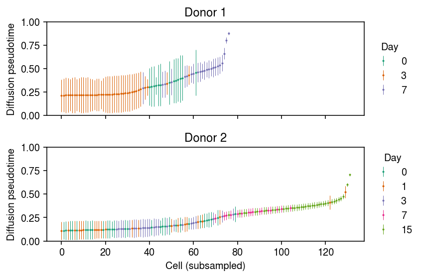
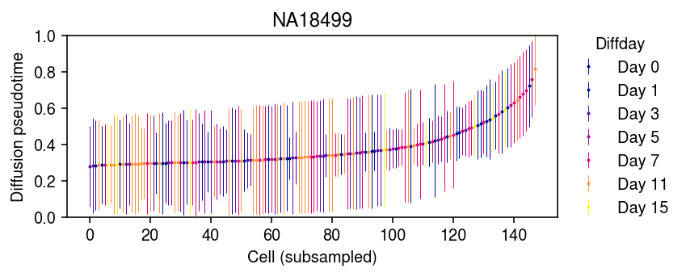

Cardiac trajectory prediction
Table of Contents
Introduction
Here, we investigate some ideas for modeling differentiation of iPSCs into cardiomyocytes. Our goal is to build intuition about methods which model gene expression trajectories.
We revisit this in light of a recent publication (Morabito et al. 2021), that used a recurrent VAE (Mitra and MacLean 2021). The input to the VAE was diffusion pseudotime (DPT), which seems suspect given our preliminary results on the uncertainty of DPT.
Setup
import anndata import collections import functools as ft import hyperopt as hp import mpebpm import numpy as np import pandas as pd import scanpy as sc import scipy.sparse as ss import scipy.special as sp import scipy.stats as st import torch
import rpy2.robjects.packages import rpy2.robjects.pandas2ri rpy2.robjects.pandas2ri.activate()
%matplotlib inline %config InlineBackend.figure_formats = set(['retina']) import matplotlib.pyplot as plt
import colorcet import matplotlib import matplotlib.pyplot as plt plt.rcParams['figure.facecolor'] = 'w' plt.rcParams['font.family'] = 'Nimbus Sans'
Materials and methods
Selewa et al. iPSC-CM data
Selewa et al. 2020 differentiated iPSCs derived from from two donor individuals into cardiomyocytes, and performed Drop-Seq and DroNC-Seq at 4 and 5 time points, respectively: 0, 1, 3, 7, and 15 days.
Read the data.
raw = pd.read_table('/project2/onibasu/data/public_html/Alan_CZI/DGE_Matrices/DROP_combined_counts.tsv.gz', index_col=0)
Convert to adata.
dat = anndata.AnnData(ss.csc_matrix(raw.values.T), obs=pd.DataFrame([pd.Series(x) for x in raw.columns.str.split('_')]), var=raw.index.to_series().to_frame())
Fix up the column names for h5ad output.
dat.var.columns = ['gene'] dat.obs.columns = ['barcode', 'day', 'donor', 'dummy1', 'dummy2']
Drop genes with no non-zero observations.
sc.pp.filter_genes(dat, min_cells=1) dat.shape
(20816, 24486)
Write out to h5ad.
dat.write('/scratch/midway2/aksarkar/singlecell/GSE129096_DROP_combined_allcells.h5ad')
Read the h5ad.
dat = anndata.read_h5ad('/scratch/midway2/aksarkar/singlecell/GSE129096_DROP_combined_allcells.h5ad')
Elorbany et al. iPSC-CM data
Elorbany et al. 2021 generated iPSC-CM differentiation scRNA-seq time course data in 19 cell lines at 7 time points. Read the data.
library(Seurat) dat <- readRDS("/project2/gilad/reem/singlecellCM/Sobjs/xfinalmerged/Sobj_allrounds_finalmerged_noNA.rds") saveRDS(dat$RNA@data, "/scratch/midway2/aksarkar/singlecell/elorbany-counts.Rds") saveRDS(dat$RNA@meta.features, "/scratch/midway2/aksarkar/singlecell/elorbany-genes.Rds") saveRDS(dat@meta.data, "/scratch/midway2/aksarkar/singlecell/elorbany-cells.Rds")
readRDS = rpy2.robjects.r['readRDS'] x = readRDS('/scratch/midway2/aksarkar/singlecell/elorbany-counts.Rds') cells = readRDS('/scratch/midway2/aksarkar/singlecell/elorbany-cells.Rds') rpy2.robjects.pandas2ri.deactivate() genes = pd.Series(list(readRDS('/scratch/midway2/aksarkar/singlecell/elorbany-genes.Rds').rownames)).to_frame() rpy2.robjects.pandas2ri.activate()
Convert to adata.
dat = anndata.AnnData( ss.csc_matrix((x.slots['x'], x.slots['i'], x.slots['p']), shape=x.slots['Dim']).T, obs=cells, var=genes)
Write to h5ad.
dat.var.columns = ['name']
dat.write_h5ad('/scratch/midway2/aksarkar/singlecell/elorbany-ipsc-cm.h5ad')
Read the h5ad.
elorbany_dat = anndata.read_h5ad('/scratch/midway2/aksarkar/singlecell/elorbany-ipsc-cm.h5ad')
Results
Diffusion pseudotime
Compute DPT in the Selewa et al. data. By default, the method embeds the data in principal component space to compute distances.
reps = {k: dat[dat.obs['donor'] == k] for k in ('Rep1', 'Rep2')} for k in reps: sc.pp.filter_genes(reps[k], min_cells=1) sc.pp.pca(reps[k]) sc.pp.neighbors(reps[k]) sc.tl.diffmap(reps[k])
Compute DPT in each donor, starting from 200 random starting points (day 0 cells).
np.random.seed(1) dpt = collections.defaultdict(list) for k in reps: for root in np.random.choice(reps[k].obs[reps[k].obs['day'] == '0'].index, 200): reps[k].uns['iroot'] = int(root) sc.tl.dpt(reps[k], n_dcs=15) dpt[k].append(reps[k].obs['dpt_pseudotime']) del reps[k].obs['dpt_pseudotime']
Order the cells in each donor by average DPT, then downsample and plot error bars.
cm = plt.get_cmap('Dark2') plt.clf() fig, ax = plt.subplots(2, 1, sharex=True) fig.set_size_inches(6, 4) for a, k in zip(ax, dpt): temp = np.array(dpt[k]).T mean_dpt = temp.mean(axis=1) order = np.argsort(mean_dpt)[::100] n = 0 for i, (day, _) in enumerate(reps[k].obs.groupby('day')): idx = reps[k].obs['day'].iloc[order] == day a.errorbar( x=np.arange(order.shape[0])[idx], y=mean_dpt[order][idx], yerr=temp[order][idx].std(axis=1), fmt='o', markersize=1, elinewidth=0.5, c=cm(i), label=day) n += len(idx) for i, a in enumerate(ax): a.set_title(f'Donor {i + 1}') a.set_ylim(0, 1) a.set_ylabel('Diffusion pseudotime') leg = a.legend(frameon=False, loc='center left', bbox_to_anchor=(1, .5)) leg.set_title('Day') ax[-1].set_xlabel('Cell (subsampled)') fig.tight_layout()

Repeat the analysis for the Elorbany et al. data. Get the individual with the most cells.
elorbany_dat.obs.groupby(['individual'])['diffday'].agg(len).sort_values().tail()
individual NA18511 22203 NA18858 23197 NA19093 24299 NA19190 24405 NA18499 29466 Name: diffday, dtype: int64
Compute DPT in that donor, starting from 200 random starting points (day 0 cells).
temp = elorbany_dat[elorbany_dat.obs['individual'] == 'NA18499'] sc.pp.filter_genes(temp, min_cells=1) sc.pp.pca(temp) sc.pp.neighbors(temp, n_neighbors=30) sc.tl.diffmap(temp, n_comps=10) np.random.seed(1) dpt = [] for root in np.random.choice(np.flatnonzero(temp.obs['diffday'] == 'Day 0'), 200): temp.uns['iroot'] = root sc.tl.dpt(temp, n_dcs=10) dpt.append(temp.obs['dpt_pseudotime'].values) del temp.obs['dpt_pseudotime'] dpt = np.array(dpt).T
Order the cells by average DPT, then downsample and plot error bars.
cm = colorcet.cm['bmy'] plt.clf() plt.gcf().set_size_inches(6, 2.5) mean_dpt = dpt.mean(axis=1) order = np.argsort(mean_dpt)[::200] for i, (day, _) in enumerate(temp.obs.groupby('diffday')): idx = temp.obs['diffday'].iloc[order] == day plt.errorbar( x=np.arange(order.shape[0])[idx], y=mean_dpt[order][idx], yerr=dpt[order][idx].std(axis=1), fmt='o', markersize=1, elinewidth=0.5, c=cm(int(day[4:]) / 15), label=day) leg = plt.legend(frameon=False, loc='center left', bbox_to_anchor=(1, .5)) leg.set_title('Diffday') plt.title('NA18499') plt.ylim(0, 1) plt.ylabel('Diffusion pseudotime') plt.xlabel('Cell (subsampled)') plt.tight_layout()

Dependence of DPT on preprocessing
Selewa et al. write “Selection of genes for trajectory analysis, or feature selection, is critical for obtaining accurate trajectories.” Since we know something about the true ordering of cells, one can use model-based optimization to find optimal pre-processing filters.
def loss(theta, dat, n_samples=200): min_cells, n_pcs, n_neighbors, n_dcs = theta temp = dat.copy() sc.pp.filter_genes(temp, min_cells=int(min_cells)) # Important: PCA is randomized too np.random.seed(1) sc.pp.pca(temp, n_comps=int(n_pcs)) sc.pp.neighbors(temp, n_neighbors=int(n_neighbors)) sc.tl.diffmap(temp, n_comps=int(n_dcs)) dpt = [] for root in np.random.choice(np.flatnonzero(temp.obs['day'] == '0'), n_samples): temp.uns['iroot'] = root sc.tl.dpt(temp, n_dcs=int(n_dcs)) dpt.append(temp.obs['dpt_pseudotime']) del temp.obs['dpt_pseudotime'] expected_order = pd.Categorical(dat.obs['day'].apply(float), ordered=True).codes order = np.argsort(np.array(dpt).T.mean(axis=1)) ranks = np.empty_like(order) ranks[order] = np.arange(len(order)) return {'loss': -st.kendalltau(ranks, expected_order)[0], 'status': hp.STATUS_OK}
rep2 = dat[dat.obs['donor'] == 'Rep2']
np.random.seed(1) trials = hp.Trials() opt = hp.fmin( ft.partial(loss, dat=rep2, n_samples=200), space=[hp.hp.loguniform('min_cells', 0, np.log(1000)), hp.hp.uniform('n_pcs', 3, 50), hp.hp.uniform('n_neighbors', 5, 50), hp.hp.uniform('n_dcs', 2, 50)], algo=hp.tpe.suggest, trials=trials, max_evals=100)
0 - b238f6e9-37dd-4970-abeb-0eeb347a11ee
NMF-based pseudotime
Look at the diffusion maps.
adata.obsm['X_nmf'] = L rep1 = adata[adata.obs['ind'] == 'Rep1'] sc.pp.neighbors(rep1, use_rep='X_nmf') sc.tl.diffmap(rep1) rep2 = adata[adata.obs['ind'] == 'Rep2'] sc.pp.neighbors(rep2, use_rep='X_nmf') sc.tl.diffmap(rep2)
from mpl_toolkits.mplot3d import Axes3D plt.clf() plt.gcf().set_size_inches(8, 5) ax = plt.gcf().add_subplot(121, projection='3d') ax.grid(False) for i, (k, g) in enumerate(rep1.obs.groupby('day')): ax.scatter(rep1.obsm['X_diffmap'][rep1.obs['day'] == k,1], rep1.obsm['X_diffmap'][rep1.obs['day'] == k,2], rep1.obsm['X_diffmap'][rep1.obs['day'] == k,3], c=f'C{i}', s=1, alpha=.1, label=k) ax.set_xlabel('Diffusion map 1') ax.set_ylabel('Diffusion map 2') ax.set_zlabel('Diffusion map 3') ax = plt.gcf().add_subplot(122, projection='3d') ax.grid(False) for i, (k, g) in enumerate(rep2.obs.groupby('day')): ax.scatter(rep2.obsm['X_diffmap'][rep2.obs['day'] == k,1], rep2.obsm['X_diffmap'][rep2.obs['day'] == k,2], rep2.obsm['X_diffmap'][rep2.obs['day'] == k,3], c=f'C{i}', s=1, alpha=.1, label=k) ax.set_xlabel('Diffusion map 1') ax.set_ylabel('Diffusion map 2') ax.set_zlabel('Diffusion map 3') leg = plt.legend(frameon=False, handletextpad=0, markerscale=4, loc='center left', bbox_to_anchor=(1, .5)) leg.set_title('Day') for h in leg.legendHandles: h.set_alpha(1) plt.tight_layout()

Compute diffusion psuedotime.
np.random.seed(1) dpt = [] for root in np.random.choice(rep1.obs[rep1.obs['day'] == 0].index, 200): rep1.uns['iroot'] = root del rep1.obs['dpt_pseudotime'] sc.tl.dpt(rep1, n_dcs=15) dpt.append(rep1.obs['dpt_pseudotime']) dpt = np.array(dpt).T
Look at pseudotime vs. real time.
plt.clf() plt.gcf().set_size_inches(3, 8) mean_dpt = dpt.mean(axis=1) order = np.array([i for k, i in sorted([(k, i) for i, k in enumerate(np.argsort(m))])]) for i, (k, _) in enumerate(rep1.obs.groupby('day')): plt.errorbar(x=mean_dpt[rep1.obs['day'] == k], y=order[rep1.obs['day'] == k], xerr=dpt[rep1.obs['day'] == k].std(axis=1), fmt='o', elinewidth=1, markersize=1, c=f'C{i}', label=k,) plt.xlabel('Diffusion pseudotime') plt.ylabel('Cell') leg = plt.legend() leg.set_title('Day')

Read off gene expression of marker genes (Karakikes et al. 2016) over DPT trajectories.
lam = L.dot(nmf.components_)
markers = [ # iPSC 'POU5F1', # Oct-4 'SOX2', 'NANOG', # mesoderm formation 'T', # BRY/TBXT 'MIXL1', # cardiogenic mesoderm 'MESP1', 'ISL1', 'KDR', # cardiac progenitor 'NKX2-5', 'GATA4', 'TBX5', 'MEF2C', 'HAND1', 'HAND2', # cardiomyocyte 'MYL2', 'MYL7', 'MYH6', 'TNNT2' ]
plt.clf() fig, ax = plt.subplots(1, 4) fig.set_size_inches(11, 3) for i, name in enumerate(['POU5F1', 'MYL7', 'T', 'MIXL1']): ax[i].set_yscale('log') for j, (k, g) in enumerate(rep1.obs.groupby('day')): ax[i].scatter(dpt.mean(axis=1)[rep1.obs['day'] == k], lam[adata.obs['ind'] == 'Rep1',np.where(rep1.var_names == name)].A.ravel()[rep1.obs['day'] == k], s=1, c=f'C{j}') ax[i].set_xlabel('Diffusion pseudotime') ax[i].set_title(name) ax[0].set_ylabel('Latent expression') fig.tight_layout()
NMF pseudotime
First, see if we can confidently separate terminal cardiomyocytes.
nmf.components_[:,np.where(rep1.var_names == 'MYL7')[0]]
array([[3.3862978819e-02], [3.5804683534e+00], [0.0000000000e+00], [1.0358071984e-02], [0.0000000000e+00], [1.8786170015e+01], [0.0000000000e+00], [0.0000000000e+00], [6.1099954847e-02], [0.0000000000e+00]])
Look at linear separability in the largest latent factors.
plt.clf() plt.gcf().set_size_inches(3, 3) ax = plt.gca() expr = lam[adata.obs['ind'] == 'Rep1',np.where(rep1.var_names == 'MYL7')[0]].A.ravel() norm = matplotlib.colors.Normalize(vmin=0, vmax=expr.max()) plt.scatter(1e5 * L[adata.obs['ind'] == 'Rep1',1].A, 1e5 * L[adata.obs['ind'] == 'Rep1',5].A, s=1, c=colorcet.cm['fire'](norm(expr))) sm = matplotlib.cm.ScalarMappable(norm=norm, cmap=colorcet.cm['fire']) sm.set_array([]) cb = plt.colorbar(sm) cb.set_label('MYL7') plt.xlabel('Factor 1') plt.ylabel('Factor 5')
Text(0,0.5,'Factor 5')
Convert to an LDA solution.
docs = L.A * nmf.components_.sum(axis=1) topics = nmf.components_ / nmf.components_.sum(axis=1, keepdims=True)
Read off the solution. Topic 5 is clearly marker genes for mature cardiomyocytes.
idx = np.where(adata.var.index.isin(markers))[0] plt.clf() plt.imshow(nmf.components_[:,idx], cmap=colorcet.cm['bmy']) plt.xticks(np.arange(idx.shape[0]), adata.var.index[idx], rotation=90) plt.xlabel('Marker gene') plt.ylabel('Factor')
Text(0,0.5,'Factor')
Per individual analysis
Try to look at one individual at a time.
rep1 = adata[adata.obs['ind'] == 'Rep1'] nmf = skd.NMF(n_components=10, solver='mu', beta_loss=1) loadings = nmf.fit_transform(rep1.X)
idx = np.where(rep1.var.index.isin(markers))[0] plt.clf() plt.imshow(nmf.components_[:,idx], cmap=colorcet.cm['bmy']) plt.xticks(np.arange(idx.shape[0]), rep1.var.index[idx], rotation=90) plt.xlabel('Marker gene') plt.ylabel('Factor')
Text(0,0.5,'Factor')
docs = loadings * nmf.components_.sum(axis=1) docs /= docs.sum(axis=1, keepdims=True)
plt.set_cmap('Paired') plt.clf() fig, ax = plt.subplots(1, 4, sharey=True) fig.set_size_inches(11, 5) for j, (day, a) in enumerate(zip([0, 1, 3, 7], ax)): prop = np.cumsum(docs[rep1.obs['day'] == day], axis=1) idx = np.lexsort(docs[rep1.obs['day'] == day].T) for i in range(prop.shape[1]): if i > 0: bot = prop[idx,i - 1] else: bot = None ax[j].bar(np.arange(prop.shape[0]), docs[idx,i], bottom=bot, color=f'C{i}') fig.tight_layout()
Geodesics
Estimate the geodesic in this space (https://www.springer.com/us/book/9780817634902, https://arxiv.org/pdf/1411.7432 https://arxiv.org/abs/1710.11379).
metric = m.components_.dot(m.components_.T)
import scipy.integrate def f(x, y): return np.vstack((y[], -.5 * np.linalg.pinv(metric), np.kron(y[1], y[1]))) def bc(ya, yb): return np.array([ya - loadings[start][0], yb - loadings[end][0]]) x = np.linspace(0, 1, 5) res = scipy.integrate.solve_bvp(f, bc, x, np.zeros((20, x.size)))
0 - f554087f-b03a-4574-8613-072c205e5251